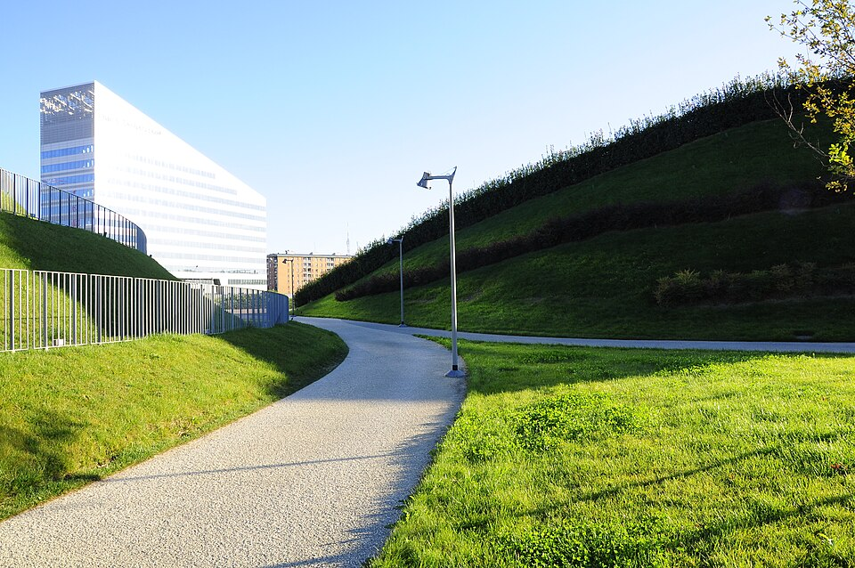

Parco Industria Alfa Romeo
Cerca forme curve e pendenze: confrontale con il tema industriale del quartiere.
Controlla costo, prenotazione, apertura e accessibilità con il gestore. / Check price, booking, opening and accessibility with the operator.

Cerca forme curve e pendenze: confrontale con il tema industriale del quartiere.
Controlla costo, prenotazione, apertura e accessibilità con il gestore. / Check price, booking, opening and accessibility with the operator.